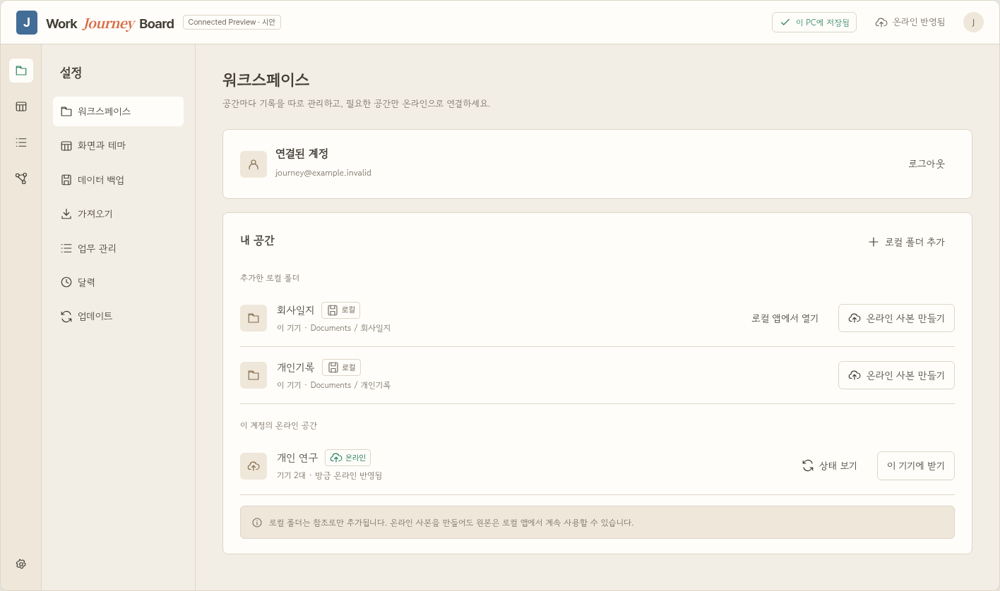
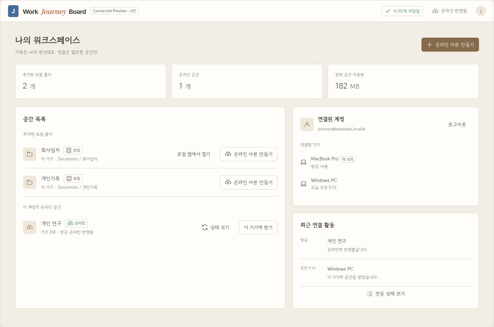
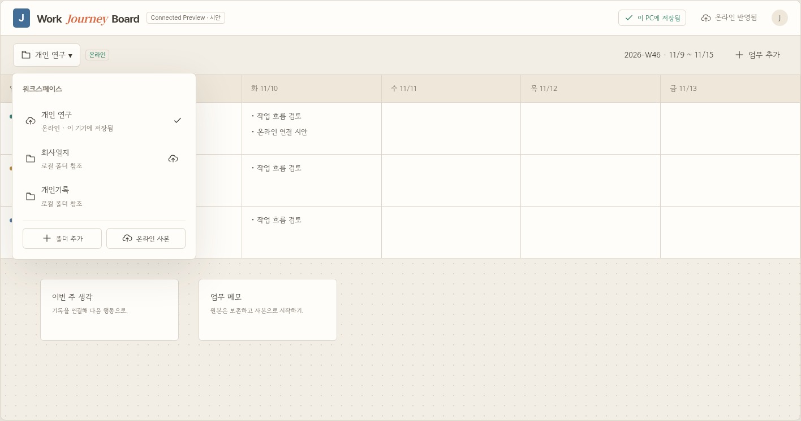

같은 격리·원본 보존 규칙을 사용하며, 진입 위치와 정보 밀도를 비교합니다. 모든 화면은 가상 시안입니다.

계정 카드와 로컬·온라인 목록을 추가하고
중앙의 4단계 안내로 사본을 만듭니다.
연결을 자주 바꾸면 설정 진입이 필요합니다.

전체 공간과 기기·연결 활동을 모아서
넓은 화면에서 상태를 확인합니다.
새 관리 화면과 통계 요소가 늘어납니다.

공간 메뉴와 오른쪽 단일 열 패널로
연결과 진행 상태를 확인합니다.
상세 정보가 많으면 세로로 길어집니다.